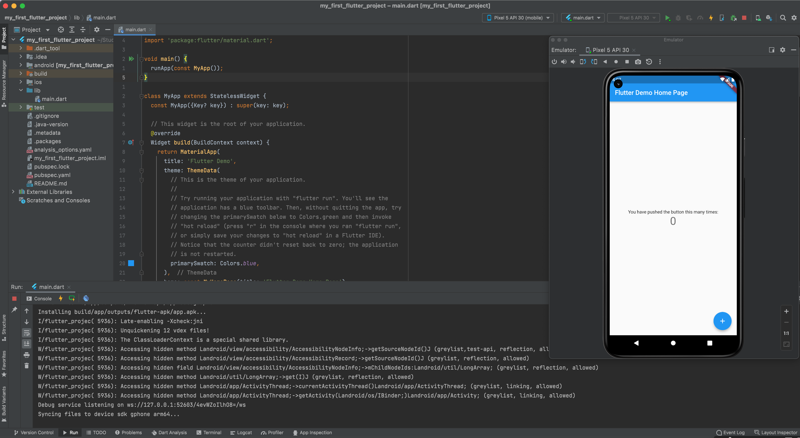

第1章
Flutterとは？
それでは、「Flutterとは何なのか？」をもう少し詳しく紹介します。
Flutter
「はじめに」でも紹介しましたように、開発環境（Android Studio含む）が作成できさえすれば、数クリックするだけで以下のようなスタートアップアプリがエミュレータ上で動作します。

図1.1: Android Studioでスタートアッププロジェクトのデバッグ
Google PlayやApple Storeで公開するためには、それぞれに開発者登録したり、リリース作業が必要になります。
しかし、モバイルアプリケーションを作成するためには、
- iOSアプリ開発のためプログラミング言語 Swiftの学習
- Xcode（統合開発環境）の使い方を取得
- Androidアプリ開発のためプログラミング言語 Java、または、Kotlinの学習
- Android Studio（統合開発環境）の使い方を取得
など、膨大な作業が必要だと諦めていたのではありませんか？
実は、Flutterを使うことでAndroid用、iPhone用のモバイルアプリを簡単に、
Flutterでは、ウィジェット（ウィジェット）と呼ばれる部品を組み合わせて表示するページを作成します。ウィジェットは、自分で作成できますし、あらかじめFlutterに用意されているウィジェット、自由につかえるよう公開されているウィジェットもあります。
ウィジェットは、誤解を恐れずに言うと、HTMLにおけるHTMLタグのようなものです。
//blanklineFlu